runs / 2026-10-27 / 102538-970000-strata-huihui-q3.8-fn-q4-xs-03579def
五重塔ボクセル庭園の単一HTMLを1,894秒・50呼びで完成
Strata 0.1.48 / llama.cpp 上の huihui-qwen3.8-flash-next-abliterated-v2-ud-iq4_xs が、五重塔庭園のボクセルアート単一HTMLを1,894.2秒・50呼び出し（主49・補助1）で完成させ、exit 0 で終了した。所要の約半分を3回の write（計919.1秒・71,827トークン、総出力124,716の57.6%）に費やし、残りは構文確認とヘッドレス検証の反復に充てた。ツールエラー10件はすべて再試行や grep/read 経由で立て直し、成果物 pagoda-garden.html（45,456バイト）を提出した。
成果物
work/pagoda-garden.html（45,456 バイト）をそのまま同梱している。重いシーンもあるため、必要なときだけ起動する。
pagoda-garden.html
44 KB · 起動するまで読み込まない
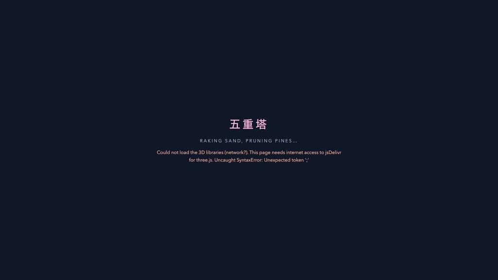
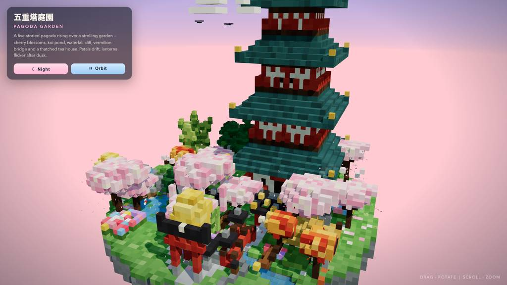
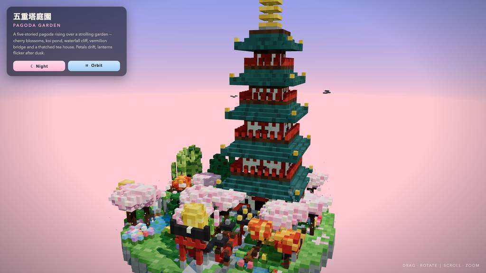
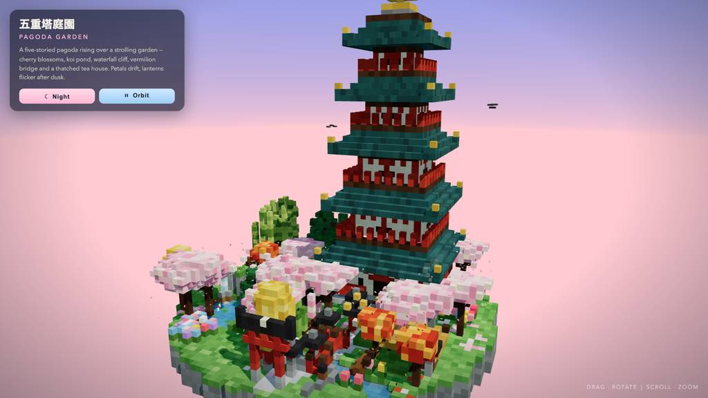
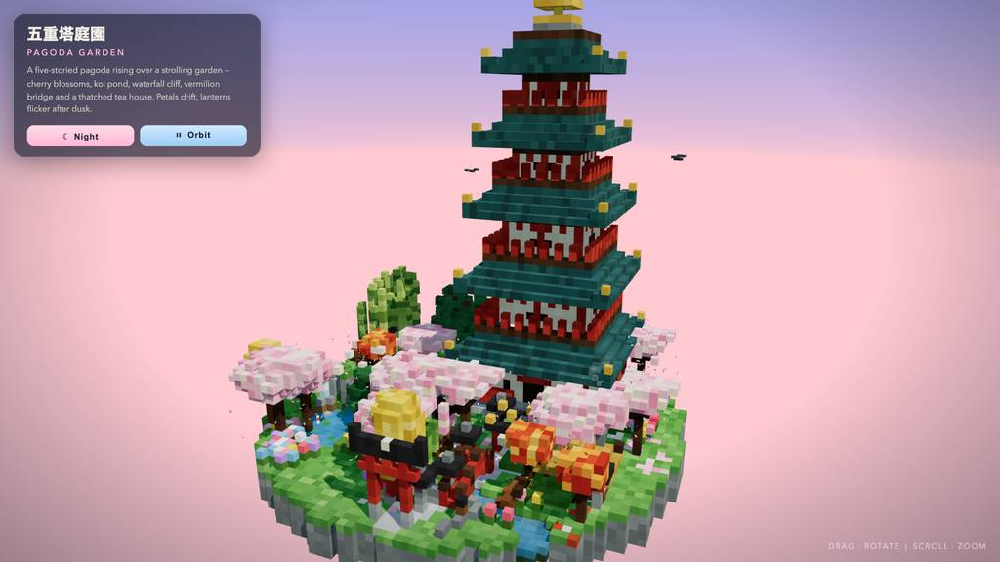
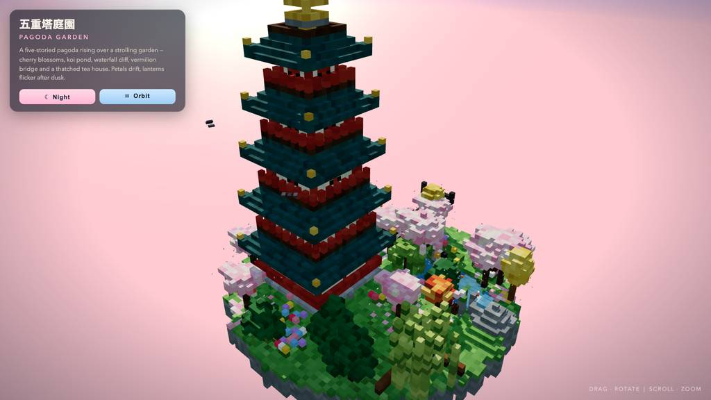
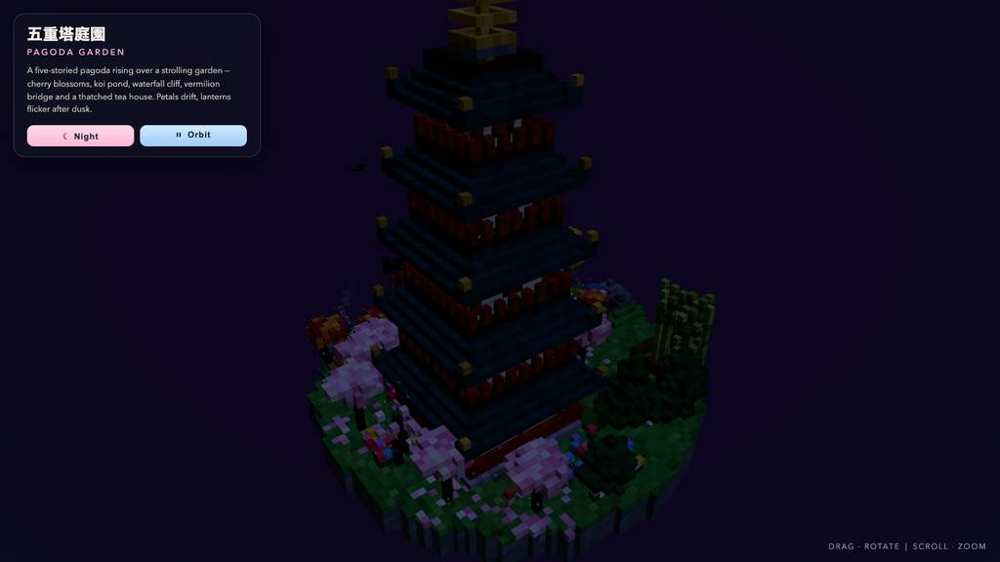
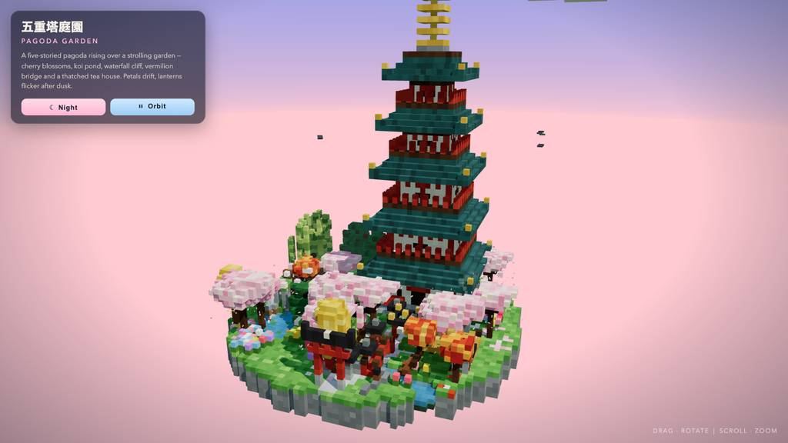
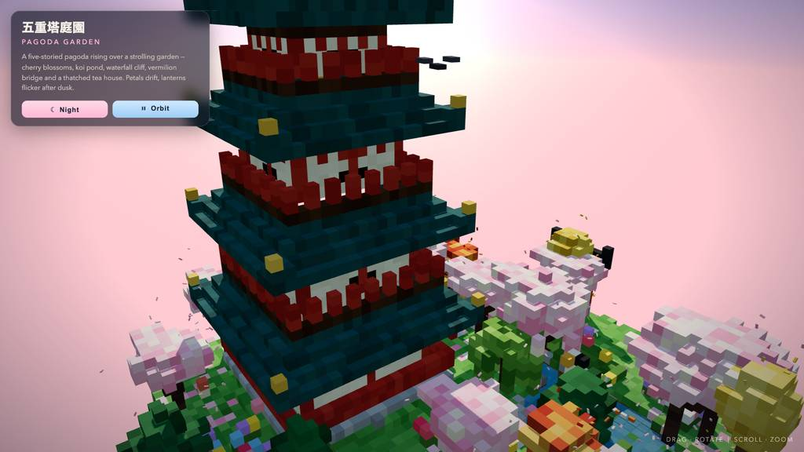
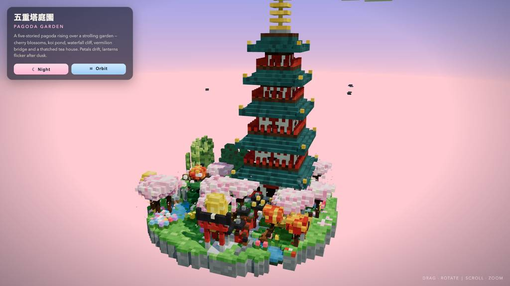
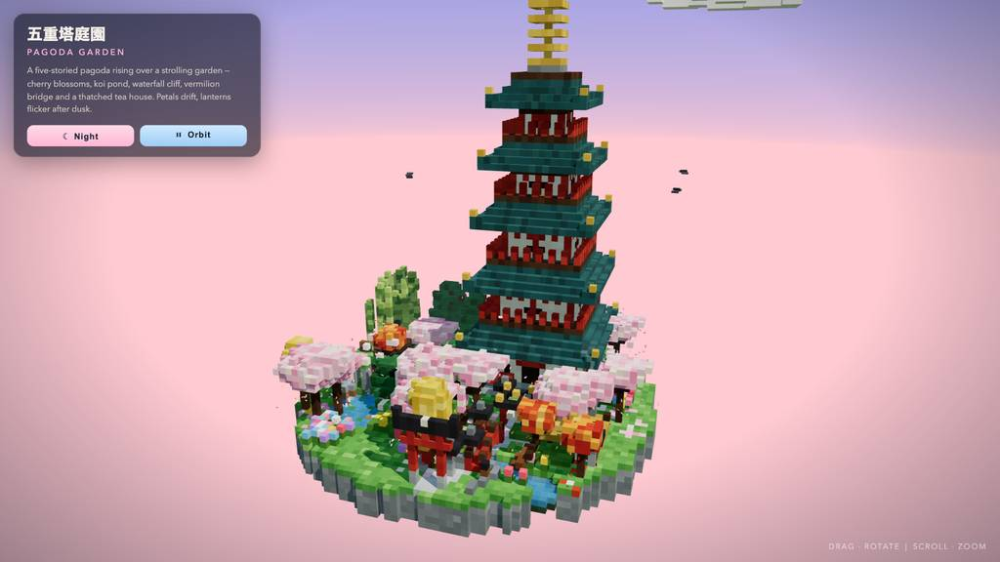
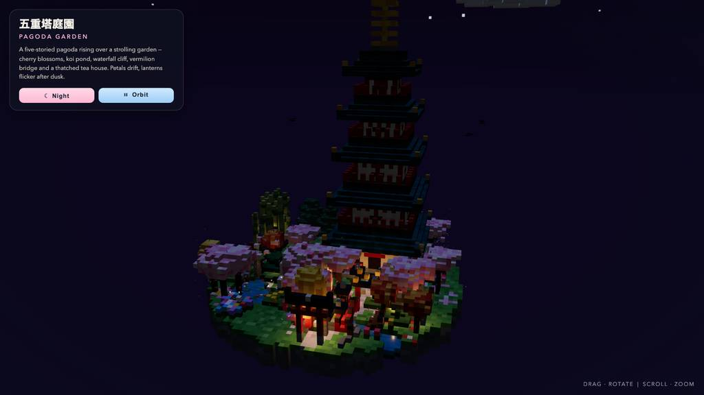
全 17 枚から等間隔に 12 枚を選んでいる。logs/events.jsonl の画像ブロックを内容ハッシュで重複排除して時系列に並べた、制作中の検証用スクリーンショット。最終版とは限らない。
成果物の構成
| 要素 | 内容 |
|---|---|
| 成果物 | 単一HTML「pagoda-garden.html」45,456バイト。依存は CDN の three.js r160（import map）のみ |
| ボクセル規模 | 静的13,826 + 動的約800。seeded RNGで決定論的に生成し、影を落とす InstancedMesh 1個に焼き込み |
| 五重塔 | 3段の石基壇と朱の欄干、腰壁・扉窓、反り上がりの入母屋屋根五重、金銅の鴟尾、相輪（輪・蓮華・宝珠） |
| 庭園 | 鯉池と蓮・岩島、滝と渓流、朱の太鼓橋、扁額付き鳥居、茅葺茶室（煙出し付き）、石灯籠11基、竹藪 |
| 植栽 | 桜10本（枝垂れ桜1）、紅葉・銀杏・ layer 松・柳・梅、散布花約300、樹下の花びら絨毯 |
| 動く命 | 渦巻く花びら520（樹種別色）、鯉4、塔を巡る鳥の群れ3、波打つ水面、流れる雲 |
| 昼夜と演出 | グラデ空・sun/moon・fog・ACESトーンマップ、夜は灯籠の発光ガラス+暖色 PointLight15+グロー、星と蛍 |
| 検証 | headless Chromiumでコンソールエラーゼロ、4カメラ角×昼夜のスクショ、固定seedで再描画一致 |
モデルの最終メッセージから読み取った内容。コードの確認はしていない。
タイムライン
50 回の API 呼び出しを時間順に並べた。上段の帯の幅が各呼び出しの所要時間で、帯の間の空白がツールの実行時間。下段はその時点のコンテキスト長。細い帯は、エージェントが別に投げた補助リクエスト（画像判定など）。 upstream が usage を返さない場合は、events.jsonl の message_end から復元する。復元できない値は ? で示す。
最も長い 2 回の生成（#6 416 秒・#2 263 秒）で 679.1 秒、壁時計の 35.9%。出力トークンの上位 4 回（#6・#5・#7・#2）で全体の 70.8%（88,295 / 124,716）。推論以外（ツール実行など）は約 64 秒（3%）。
フェーズ別の内訳
| フェーズ | 経過 | 所要 | 全体に占める割合 | 呼び出し | 出力 tok | 何をしたか |
|---|---|---|---|---|---|---|
| 準備と計画 | 0:00–7:31 | 451 秒 | 23.8% | 4 | 29,138 | 補助1件と作業ディレクトリ確認（#2、262.8秒・16,468トークン）、todo計画初期化（#3、181.7秒）に約450秒を費やした。#4 で todo 引数不正（E1）が出て計画開始をやり直した。 |
| HTMLの書き出し | 7:31–22:50 | 919 秒 | 48.6% | 3 | 71,827 | 3回の write に計919.1秒・71,827トークンを投じ、シーンを一気に生成した。#7 は path 引数欠落（E2）でエラーとなり、書き直しが必要だった。 |
| 起動と構文確認 | 22:50–23:35 | 45 秒 | 2.4% | 7 | 2,349 | headlessブラウザ起動で browser.open の options 渡し誤り（E3）を出しつつスクショに到達。モジュール構文チェックで判明した睡蓮ループと破損した inPond を read/grep 経由で修復した。 |
| 屋根とカドり修正 | 23:35–25:33 | 118 秒 | 6.2% | 9 | 6,669 | カメラ位置の特定から屋根の平坦化・テラス積層修正に約110秒。PUTのブロック解決失敗（E6）を grep/read で回収し、day ビュー v2 のスクショで確認した。 |
| 画づくりの調整 | 25:33–27:45 | 132 秒 | 7.0% | 10 | 5,121 | 雲を塔より高く上げ、カメラのフレーミングを調整して build 完了を todo で示した。scene ハンドルを公開し、多角度+昼夜の検査ループへ移行した。 |
| 夜間演出の反復 | 27:45–31:18 | 213 秒 | 11.3% | 15 | 8,822 | 夜間照明・花びら強化を約150秒で反復し、アンカー不一致（E9）と PUT 本文欠落（E10）を位置確認→再適用で立て直した。相輪の余白追加、受入スクショ、ボクセル数取得までがこの範囲。 |
| クローズ | 31:18–31:32 | 13 秒 | 0.7% | 2 | 790 | 検証・イテレーションの todo を閉じ、最終報告を出した。 |
フェーズの切れ目は、ログから読み取れる作業内容の変わり目（LLM による区切り）。所要時間は、そのフェーズの最初の呼び出しの開始から次のフェーズの最初の呼び出しの開始まで。
50 回の呼び出しを表で見る
| # | 種別 | フェーズ | 開始 | 所要 秒 | prompt | うち cache | 出力 | tok/s | HTTP | ツール |
|---|---|---|---|---|---|---|---|---|---|---|
| 1 | 補助 | 準備と計画 | 0:00 | 8.1 | 180 | 0 | 547 | 75.1 | 200 | — |
| 2 | 主ループ | 準備と計画 | 0:00 | 262.8 | 8,008 | 0 | 16,468 | 65.4 | 200 | bash |
| 3 | 主ループ | 準備と計画 | 4:23 | 181.7 | 24,582 | 8,003 | 12,002 | 68.1 | 200 | todo |
| 4 | 主ループ | 準備と計画 | 7:25 | 5.8 | 36,613 | 24,577 | 121 | 71.4 | 200 | todo |
| 5 | 主ループ | HTMLの書き出し | 7:31 | 258.5 | 36,881 | 36,733 | 20,941 | 81.2 | 200 | write |
| 6 | 主ループ | HTMLの書き出し | 11:49 | 416.3 | 57,864 | 36,876 | 31,165 | 76.1 | 200 | write |
| 7 | 主ループ | HTMLの書き出し | 18:45 | 244.3 | 89,172 | 57,859 | 19,721 | 84.1 | 200 | write |
| 8 | 主ループ | 起動と構文確認 | 22:50 | 4.8 | 108,936 | 108,895 | 273 | 64.8 | 200 | eval |
| 9 | 主ループ | 起動と構文確認 | 22:55 | 4.4 | 109,465 | 109,210 | 267 | 71.6 | 200 | eval |
| 10 | 主ループ | 起動と構文確認 | 23:04 | 9.9 | 110,734 | 109,733 | 584 | 68.1 | 200 | bash |
| 11 | 主ループ | 起動と構文確認 | 23:14 | 8.5 | 111,405 | 111,317 | 547 | 68.7 | 200 | edit |
| 12 | 主ループ | 起動と構文確認 | 23:22 | 4.6 | 112,056 | 111,952 | 271 | 66.3 | 200 | read + grep |
| 13 | 主ループ | 起動と構文確認 | 23:27 | 3.3 | 112,753 | 112,327 | 167 | 67.5 | 200 | edit |
| 14 | 主ループ | 起動と構文確認 | 23:30 | 4.2 | 113,150 | 112,921 | 240 | 69.2 | 200 | bash |
| 15 | 主ループ | 屋根とカドり修正 | 23:35 | 4.7 | 113,409 | 113,389 | 318 | 71.7 | 200 | eval |
| 16 | 主ループ | 屋根とカドり修正 | 23:44 | 34.1 | 114,667 | 113,727 | 2,087 | 63.8 | 200 | read |
| 17 | 主ループ | 屋根とカドり修正 | 24:19 | 2.8 | 117,280 | 116,753 | 120 | 64.3 | 200 | grep |
| 18 | 主ループ | 屋根とカドり修正 | 24:21 | 46.1 | 117,595 | 117,400 | 2,991 | 65.9 | 200 | edit |
| 19 | 主ループ | 屋根とカドり修正 | 25:08 | 2.9 | 120,797 | 120,587 | 136 | 63.0 | 200 | grep |
| 20 | 主ループ | 屋根とカドり修正 | 25:11 | 1.8 | 121,352 | 120,933 | 66 | 69.7 | 200 | read |
| 21 | 主ループ | 屋根とカドり修正 | 25:12 | 4.9 | 121,762 | 121,418 | 304 | 75.6 | 200 | edit |
| 22 | 主ループ | 屋根とカドり修正 | 25:17 | 8.0 | 122,489 | 122,067 | 453 | 63.7 | 200 | bash |
| 23 | 主ループ | 屋根とカドり修正 | 25:25 | 2.6 | 122,958 | 122,942 | 194 | 82.6 | 200 | eval |
| 24 | 主ループ | 画づくりの調整 | 25:33 | 19.1 | 123,999 | 123,151 | 1,095 | 61.6 | 200 | grep |
| 25 | 主ループ | 画づくりの調整 | 25:52 | 3.0 | 125,383 | 125,094 | 149 | 67.0 | 200 | edit |
| 26 | 主ループ | 画づくりの調整 | 25:55 | 10.5 | 125,773 | 125,533 | 623 | 64.0 | 200 | eval |
| 27 | 主ループ | 画づくりの調整 | 26:10 | 12.3 | 127,242 | 126,397 | 676 | 61.6 | 200 | edit |
| 28 | 主ループ | 画づくりの調整 | 26:22 | 5.7 | 128,138 | 127,919 | 344 | 70.8 | 200 | todo + eval |
| 29 | 主ループ | 画づくりの調整 | 26:31 | 5.9 | 129,623 | 128,483 | 266 | 60.5 | 200 | read |
| 30 | 主ループ | 画づくりの調整 | 26:37 | 11.7 | 133,093 | 129,889 | 607 | 61.1 | 200 | edit |
| 31 | 主ループ | 画づくりの調整 | 26:49 | 6.8 | 133,852 | 133,699 | 432 | 70.5 | 200 | eval |
| 32 | 主ループ | 画づくりの調整 | 26:59 | 32.0 | 134,736 | 57,859 | 443 | 60.9 | 200 | edit |
| 33 | 主ループ | 画づくりの調整 | 27:31 | 7.2 | 135,351 | 135,179 | 486 | 75.1 | 200 | eval |
| 34 | 主ループ | 夜間演出の反復 | 27:45 | 52.0 | 136,479 | 107,011 | 2,608 | 62.5 | 200 | edit |
| 35 | 主ループ | 夜間演出の反復 | 28:37 | 3.4 | 139,237 | 139,086 | 152 | 56.5 | 200 | grep |
| 36 | 主ループ | 夜間演出の反復 | 28:40 | 3.0 | 139,874 | 139,388 | 133 | 64.0 | 200 | grep |
| 37 | 主ループ | 夜間演出の反復 | 28:43 | 15.9 | 140,202 | 140,006 | 1,067 | 70.4 | 200 | edit |
| 38 | 主ループ | 夜間演出の反復 | 28:59 | 7.5 | 141,873 | 141,270 | 451 | 70.2 | 200 | eval |
| 39 | 主ループ | 夜間演出の反復 | 29:13 | 40.3 | 143,007 | 107,011 | 1,674 | 60.6 | 200 | edit |
| 40 | 主ループ | 夜間演出の反復 | 29:54 | 3.9 | 144,752 | 144,682 | 202 | 60.5 | 200 | grep |
| 41 | 主ループ | 夜間演出の反復 | 29:58 | 4.5 | 145,348 | 144,953 | 249 | 69.7 | 200 | edit |
| 42 | 主ループ | 夜間演出の反復 | 30:02 | 3.3 | 145,996 | 145,597 | 129 | 55.0 | 200 | read |
| 43 | 主ループ | 夜間演出の反復 | 30:05 | 2.6 | 146,591 | 146,124 | 113 | 70.0 | 200 | edit |
| 44 | 主ループ | 夜間演出の反復 | 30:08 | 6.8 | 146,875 | 146,704 | 379 | 62.6 | 200 | eval |
| 45 | 主ループ | 夜間演出の反復 | 30:20 | 23.6 | 147,555 | 107,011 | 590 | 59.1 | 200 | edit |
| 46 | 主ループ | 夜間演出の反復 | 30:44 | 3.7 | 148,246 | 148,144 | 215 | 70.3 | 200 | eval |
| 47 | 主ループ | 夜間演出の反復 | 30:53 | 11.6 | 148,911 | 139,779 | 443 | 61.1 | 200 | eval |
| 48 | 主ループ | 夜間演出の反復 | 31:08 | 7.3 | 149,485 | 149,354 | 417 | 63.1 | 200 | eval |
| 49 | 主ループ | クローズ | 31:18 | 4.0 | 150,245 | 149,903 | 190 | 61.9 | 200 | todo + todo |
| 50 | 主ループ | クローズ | 31:22 | 9.2 | 150,634 | 150,434 | 600 | 70.7 | 200 |
試行錯誤
ツールがエラー（isError）を返した結果の一覧。ツールは成功したのにモデル自身が内容を壊したケースは、ここには出ない。
エラーとして記録された 10 件
| 経過 | ツール | 起きたこと | 分類 |
|---|---|---|---|
| 7:25 | todo | todo 初期化で list に phases ではなく文字列を渡してエラーになり、#4 で再試行した。Invalid todo arguments: list must be phases for init (was a string) | 引数不正 |
| 18:45 | write | #7 の write が path 引数欠落でエラーとなり、19,721トークンの生成を消費した。Validation failed for tool "write": - path: path must be a string (was missing) Received arguments: { "content": "<!DOCTYPE html>\n<html lang=\"en\">\n<head>\n<meta charset=\"utf-8\">\n<meta name=\"vi | パス欠落 |
| 22:55 | eval | eval で browser.open を URL 直指定で呼び、options オブジェクト必須の TypeError を受けた。TypeError: browser.open() expects an options object; pass the URL inside it: browser.open({ url, name }) at open ([eval-prelude:browser]:262:24) at <anonymous> (js-cell-a89ec182-5044-4308-b87c-2908c3d | API誤用 |
| 22:59 | eval | タブ main 起動とスクショ（jpeg 14.71 KB）を含む結果がエラー扱いで記録された。Opened tab "main" on headless browser (hidden, shared) URL: file://~ Title: 五重塔庭園 · Pagoda Garden — Voxel Diorama Screenshot captured Format: image/jpeg (14.71 KB) D | evalエラー |
| 23:39 | eval | タブ再利用のスクショ実行（jpeg 58.08 KB）がエラー結果として記録された。Reused tab "main" on headless browser (hidden, shared) URL: file://~ Title: 五重塔庭園 · Pagoda Garden — Voxel Diorama Screenshot captured Format: image/jpeg (58.08 KB) D | evalエラー |
| 25:08 | edit | edit の PUT 275*: が line 275 の構文ブロックを解決できず失敗し、grep/read 後に再編集した。line 1: `PUT 275*:` could not resolve a syntactic block beginning on line 275 (unsupported language, blank/closer line, or parse error). Use `PUT 275.=M:` with explicit lines. 273: for(const sx of[-1, | edit構文エラー |
| 26:27 | eval | タブ再利用のスクショ（jpeg 52.31 KB）がエラー結果として記録された。Reused tab "main" on headless browser (hidden, shared) URL: file://~ Title: 五重塔庭園 · Pagoda Garden — Voxel Diorama Screenshot captured Format: image/jpeg (52.31 KB) D | evalエラー |
| 26:56 | eval | DAY 既定視点のスクショ実行がエラー結果として記録された。Reused tab "main" on headless browser (hidden, shared) URL: file://~ Title: 五重塔庭園 · Pagoda Garden — Voxel Diorama == DAY default == Screenshot captured Format: image | evalエラー |
| 28:37 | edit | edit が見ていない行番号（line 733）を指して失敗し、grep で現在位置を確認後に再適用した。This edit anchors to lines 733 of pagoda-garden.html that [pagoda-garden.html#766B] never displayed (it showed a partial range, a search hit, or a folded summary). Actual file content at those lines: | edit参照エラー |
| 29:54 | edit | edit の PUT <N: が本文行なしで失敗し、grep 後の #41 で再適用した。line 8: `PUT <N:` / `PUT >N:` promises body rows and got none. Write `+TEXT` rows, or drop the `:` to paste a register (`PUT >N` = anonymous, `PUT >N @name` = named). | edit本文欠落 |
経過は、そのツールを呼んだターンの終了時刻。エラー本文は先頭 300 文字までで、パスや接続先は伏せてある。
気づいた点
計測データ（呼び出し一覧・エラー・最終メッセージ）だけから LLM が書いた読み取り。文中の数値は、上の KPI や表と照らして確認する。
書き出し3回で全体の半分
#5〜#7 の write 計919.1秒は総経過1,894.2秒の48.5%、出力71,827トークンは総出力124,716の57.6%を占める。長い生成呼びはほぼ decode 律速で、#6 は prefill 6.6秒に対し decode 409.6秒だった。
準備2件で7分超
#2 の bash（262.8秒・16,468トークン）と #3 の todo（181.7秒・12,002トークン）だけで444.5秒、全時間の約23%。ディレクトリ確認と計画段階の出力が、その後の短い修正呼び（各1〜2秒台）と比べ突出して大きい。
エラーは呼び出し書式に集中
10件のうち edit 関連3件（E6/E9/E10）は PUT のブロック指定・行アンカー・本文行の書式問題、E3 は eval の API 渡し方、E1/E2 は todo/write の引数不備。モデルの描画法そのものよりツール呼び出しの型・書式の揺れが失敗の主因。
検証は小刻みな反復
#8 以降は eval 13件・スクショ17枚で edit→構文確認→eval の往復が中心。夜間調整の #34〜#44 は11呼び・約150秒で、grep による位置確認（#35/#36/#40）を挟みながら1〜52秒の編集を積み上げた。
キャッシュ剥離と余裕ある窓
#32 で cache が57,859まで落ち prefill 24.5秒、#34/#39/#45 でも cache=107,011 から9.8〜13.3秒の再 prefill が発生。ピークコンテキスト150,634はウィンドウ524,288の約29%で、usage は50件全件揃い（usage_complete）だった。
入力と設定
Design and create a very creative, elaborate, and detailed voxel art scene of a pagoda in a beautiful garden with trees, including some cherry blossoms. Make the scene impressive and varied and use colorful voxels. Add as many details as possible to showcase your attention to them. Use whatever libraries to get this done but make sure I can paste it all into a single HTML file.
input/prompt.md の全文。SHA-256 は ceece4685b37…。
| omp の起動オプション | --print --mode json --thinking high --no-title --approval-mode yolo |
| upstream | （接続先は伏せている） |
| タイムアウト | 43,200 秒 |
config/00-omp.yml
setupVersion: 2 autolearn: enabled: false autoContinue: false